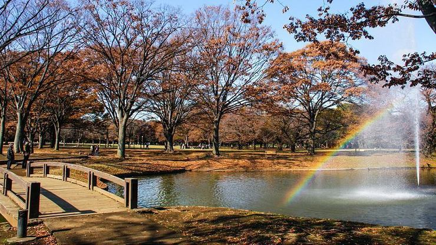

Yoyogi Park
代々木公園
Yoyogi Park (代々木公園, Yoyogi Kōen) is one of Tokyo's largest city parks, featuring wide lawns, ponds and forested areas. It is a great place for jogging, picnicking and other outdoor activities.
Although Yoyogi Park has relatively few cherry trees compared to other sites in Tokyo, it makes for a nice hanami spot in spring (late March to early April). Furthermore, it is known for its ginkgo tree forest, which turns intensely golden in autumn (late November to early December).
Before becoming a city park in 1967, the area where Yoyogi Park is located served as the site of the Olympic Village for the 1964 Tokyo Olympics, and before that, as a residential area for US military personnel.
